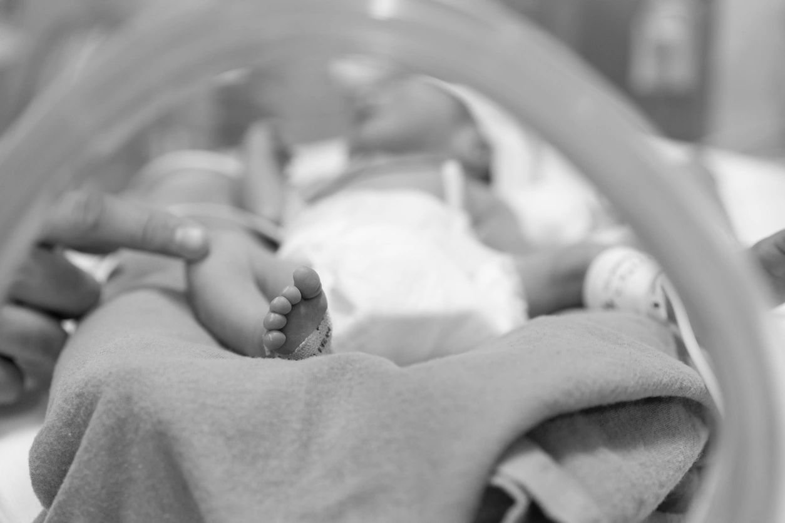

2023 PAS Presentations

The neonatal nutrition research group at UAB is excited to announce its upcoming research presentations at the 2023 Pediatric Academic Societies Meeting, which will take place from April 28 to May 1, 2023.
One of the highlights of the group's presentations is the masked, randomized trial titled "Increased Milk Protein to Accrue Critical Tissue (IMPACT) in Infants Born Extremely Preterm." The trial investigates the effect of increased milk protein intake on fat-free mass accretion. This trial will be presented in the session titled "Neonatal Fetal Nutrition & Metabolism 1" on Saturday, April 29, 2023, from 9:00 AM to 9:15 AM ET.
Another important presentation is the randomized controlled trial titled "Early and Exclusive Enteral Nutrition in Infants Born Very Preterm." This trial evaluates the effects of early and exclusive enteral nutrition on preterm infant growth and body composition. This trial will be presented in the session titled "Neonatal Clinical Trials 2" on Sunday, April 30, 2023, from 2:15 PM to 2:30 PM.
The group is also participating at a hot topic symposium titled "Moving Beyond Weight, Length, and Head Circumference: Advances in Infant Nutritional Assessment." Our presentation highlights the importance of body composition as a primary outcome in neonatal clinical trials. This symposium will be held on Sunday, April 30, 2023, from 2:00 PM to 3:30 PM.
In addition, the group will present six posters at the meeting. The neonatal nutrition research group's research presentations at PAS promise to be informative and insightful, offering new insights and strategies for improving the nutritional outcomes of preterm and extremely preterm infants. The group is excited to share their findings and engage in fruitful discussions with other researchers and healthcare professionals at the conference.
Abstract Title: Increased Milk Protein to Accrue Critical Tissue (IMPACT) in Infants Born Extremely Preterm: A Masked, Randomized Trial (Ariel A. Salas, presenter)
Abstract ID: 1423981
Session Title: Neonatal Fetal Nutrition & Metabolism 1
Session Type: Oral Abstract
Session Date: Saturday April 29, 2023
Presentation Time: 9:00 AM - 9:15 AM
Abstract Title: Early and Exclusive Enteral Nutrition in Infants Born Very Preterm: A Randomized Controlled Trial (Jackie Razzaghy, presenter)
Abstract ID: 1417065
Session Title: Neonatal Clinical Trials 2
Session Type: Oral Abstract
Session Date: Sunday April 30, 2023
Presentation Time: 2:15 PM - 2:30 PM
Presentation: Body composition as primary outcome in neonatal clinical trials (Ariel A. Salas, presenter)
Session ID: 1356088
Session Type: Hot Topic Symposia
Session Date: Sunday April 30, 2023
Session Time: 2:00 PM - 3:30 PM
Abstract Title: Postnatal Growth as Stand-Alone Predictor of Cognition at 2 Years of Age in Extremely Preterm Infants (Ariel A. Salas, presenter)
Abstract ID: 1419828
Session Title: Neonatal Fetal Nutrition & Metabolism 2: Neonatal Nutrition, Growth, and Outcomes
Session Type: Poster
Session Date: Friday April 28, 2023
Poster Session Time: 5:15 PM - 7:15 PM
Abstract Title: Differences in Growth and Body Composition of Infants born Preterm According to Race (Ariel A. Salas, presenter)
Abstract ID: 1423984
Session Title: Neonatal-Perinatal Health Care Delivery 2: Epi/HSR Equity
Session Type: Poster
Session Date: Friday April 28, 2023
Poster Session Time: 5:15 PM - 7:15 PM
Abstract Title: Defining Optimal Body Composition Outcomes at Term Equivalent Age in Infants Born Very Preterm (Ariel A. Salas, presenter)
Abstract ID: 1423985
Session Title: Neonatal-Perinatal Health Care Delivery 3: Practices: Growth & Nutrition, Potpourri
Session Type: Poster
Session Date: Saturday April 29, 2023
Poster Session Time: 3:30 PM - 6:00 PM
Abstract Title: The Gut Microbiome of Human Milk-Fed Infants Born Extremely Preterm Randomized to Receive Increased Enteral Protein Intake (Miriam Aguilar-Lopez, presenter)
Abstract ID: 1429869
Session Title: Neonatal GI Physiology & NEC 2: Gut and Liver Health
Session Type: Poster
Session Date: Friday April 28, 2023
Poster Session Time: 5:15 PM - 7:15 PM
Abstract Title: Is measuring Skeletal Muscle Mass with the D3-Creatine Dilution Method feasible in Premature Infants? (Kathryn Cyrus, presenter)
Abstract ID: 1419828
Session Title: Neonatal Fetal Nutrition & Metabolism 2: Neonatal Nutrition, Growth, and Outcomes
Session Type: Poster
Session Date: Friday April 28, 2023
Poster Session Time: 5:15 PM - 7:15 PM
Abstract Title: Prediction of Early Oral Feeding Achievement in Preterm Infants (Vivek Shukla, presenter)
Abstract ID: 1417065
Session Title: Neonatal GI Physiology & NEC 5: Predicting Necrotizing Enterocolitis, Gut Health and Oral Feeding
Session Type: Poster
Session Date: Saturday April 29, 2023
Poster Session Time: 3:30 PM - 6:00 PM